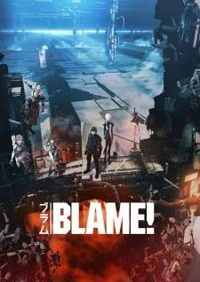
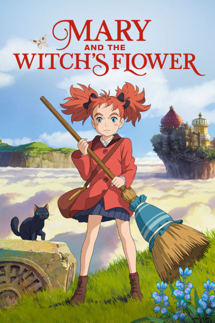
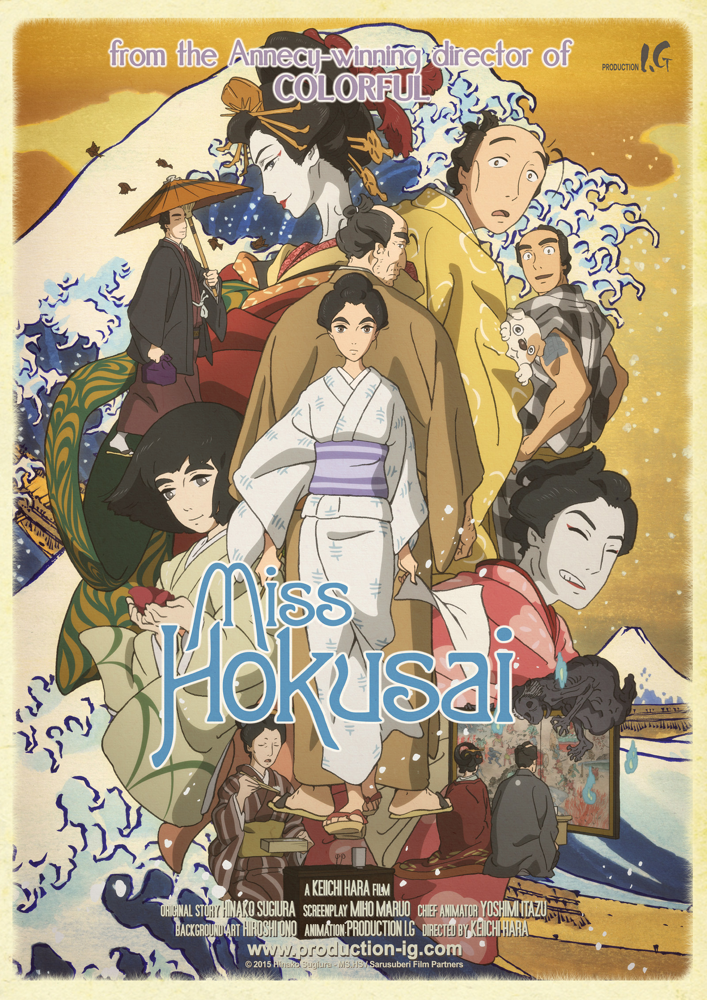

Blame!

Platform: Netflix, Amazon Prime
Rotten Tomatoes Score: N/A
Rating: 16+
Watch the trailer here
Actors: Takahiro Sakurai, Kana Hanazawa, Sora Amamiya
Synopsis:In a distant dystopian future that is wild and out of control, join Killy
on a quest to reclaim a dwindling civilization from the brink of oblivion
Mary and the Witch's Flower

Platform:Amazon Prime
Rotten Tomatoes Score: 86%
Rating:PG
Watch the trailer here
Actors: Hana Sugisaki, Ryunosuke Kamiki, Yuki Amami
Synopsis:Mary is an ordinary young girl stuck in the country with her Great-Aunt Charlotte
and seemingly no adventures or friends in sight. She follows a mysterious cat into the nearby forest, where she
discovers an old broomstick and the strange Fly-by-Night flower, a rare plant that blooms only once every seven
years and only in that forest. Together the flower and the broomstick whisk Mary above the clouds, and far away
to Endor College - a school of magic run by headmistress Madam Mumblechook and the brilliant Doctor Dee. But there
are terrible things happening at the school, and when Mary tells a lie, she must risk her life to try to set things right.
Miss Hokusai

Platform:Netflix
Rotten Tomatoes Score: 92%
Rating:PG-13
Watch the trailer here
Actors: Anne Watanabe, Kumiko Asou, Gaku Hamada
Synopsis:As all of Edo flocks to see the work of the revered painter Hokusai, his daughter
O-Ei toils diligently inside his studio. Her masterful portraits, dragons and erotic sketches- sold under the
name of her father- are coveted by upper crust Lords and journeyman print makers alike. Shy and reserved in public,
in the studio O-Ei is as brash and uninhibited as her father, smoking a pipe while sketching drawings that would make
contemporary Japanese ladies blush. But despite this fiercely independent spirit, O-Ei struggles under the domineering
influence of her father and is ridiculed for lacking the life experience that she is attempting to portray in her art.
Miss Hokusai's bustling Edo (present day Tokyo) is filled with yokai spirits, dragons, and conniving tradesmen, while
O-Ei's relationships with her demanding father and blind younger sister provide a powerful emotional underpinning to this
sumptuously-animated coming-of-age tale.